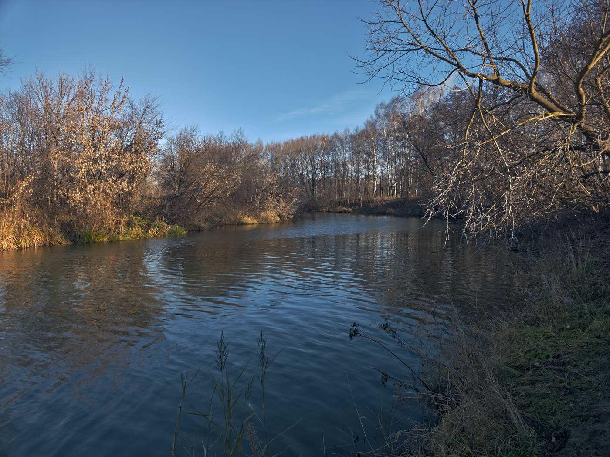
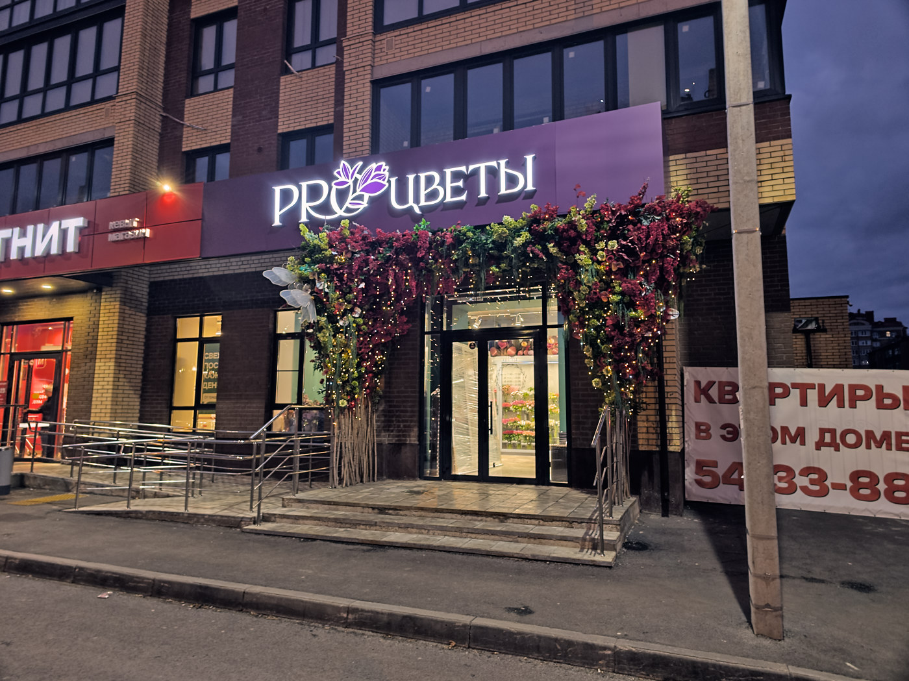
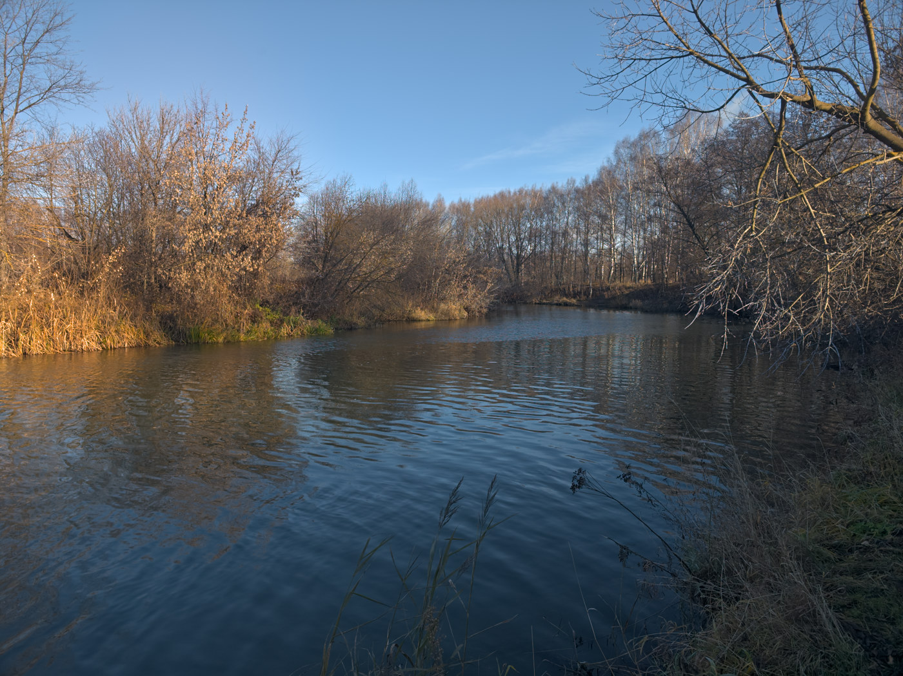

LightCraft 手工修图 Skill
这是一个让 AI 代理在 LightCraft 0.21.1 中完全手工修图的技能：显式滑块数值、真实蒙版几何、真实指针手势。不用 Auto，不靠魔法。
简介
LightCraft 是开源、非破坏性的 RAW 处理软件（Lightroom 替代品），内置 MCP 服务器。本仓库是一个可直接使用的 OpenCode / Claude Code / Codex skill：
~/.config/opencode/skills/lightcraft/
├── SKILL.md # 原则、工作流、工具路由、陷阱
├── references/ # 12 份按需查阅的手册
└── scripts/ # MCP 启动器、应用启动器、文档刷新、插件清单
它覆盖全部 392 条命令、114 个显影滑块、完整的 develop JSON 结构、所有蒙版类型、污点修复、Point Color、HDR、包围曝光合成、导出，以及 41 个内置预设及其真实数值配方。
安装
git clone https://github.com/ildargiv/lightcraft-manual-skill.git \
~/.config/opencode/skills/lightcraft
重启代理以重新扫描技能。要求：LightCraft 0.21.1+，Python 3（仅辅助脚本需要）。
连接正在运行的应用（推荐）
在 opencode.json 中通过自恢复包装器注册 MCP 服务器：
"lightcraft": {
"type": "local",
"command": ["python", "<skills>/lightcraft/scripts/mcp-connect.py"],
"enabled": true
}
mcp-connect.py 在需要时以 --control 7980 启动桌面应用，然后把 stdio 交给 lightcraft-cli mcp --compact --connect 127.0.0.1:7980。代理获得全部修图工具以及实时 UI 工具：screenshot、click、press_key、pointer_gesture、set_ui、clipboard。
手动等价命令：
powershell -ExecutionPolicy Bypass -File <skills>/lightcraft/scripts/start-lightcraft-app.ps1
我们的优势
- 手工修图是规则，不是愿望。 明确禁用
develop.auto、develop.autoBwMix、Auto WB、crop.autoStraighten、geometry.upright auto、spot.findDust/findBlemishes、lensBlur.findSubject、preset.apply、develop.sync/autoSync、develop.matchExposure。每条禁令都给出手工替代方案——显式数值和坐标。 - 覆盖整个程序。 392 条命令及参数、114 个滑块的范围/步长/默认值、完整
developJSON、10 类蒙版、画笔、组件、修复点、红眼、Point Color、Lens Blur、曲线、HSL、色彩分级、光学、几何、打印、幻灯片、归档。 - 全部预设拆解到数字。 41 个内置预设均导出实际内容：设置了哪些字段、值是多少。代理可以手工复现效果并按照片微调，而不是按按钮。另含 3 个点曲线预设和 8 个导出预设。
- 端到端 HDR。
develop.hdr+maxEv+hdr.sdr*，包围曝光合成（merge.hdr、hdrBatch、全景），gain map JPEG 导出（ISO 21496-1）、10-bit PQ/HLG AVIF、16-bit Rec.2020 PQ PNG/JXL、32-bit float TIFF。已用 ffprobe 验证：rgb48be、smpte2084、bt2020。预览始终是 SDR——代理不会用曝光去「修正」看不见的 HDR。 - 实时 UI 与真实手势。 connect 模式提供
screenshot、click、pointer_gesture、press_key。代理能在 LightCraft 窗口中看到结果，并用归一化图像坐标中的真实手势画笔画渐变，而不仅是执行命令。 - 自恢复 MCP。 包装器带控制端口启动应用，消除
catalog.lock冲突（headless 服务与桌面程序不能同时占用同一图库）。 - 自更新文档。
scripts/refresh-reference.py从已安装版本重新生成命令/滑块目录和全部预设配方，并与 GitHub 最新发布版核对。 - 了解扩展并安全导入。 支持的格式（
.lcpreset、XMP、.lrtemplate、.cube、.dcp、.lceffect、.lccurve、SAM 3、denoise ONNX）、dryRun导入流程、第三方项目批判性清单，以及对盗版合集的警告。 - 在真实 RAW 上验证。 下面的示例是 Xiaomi 13 Ultra DNG，全部手工处理；每个都附带可复现的精确
developJSON。 - 安全护栏。 只在
photo.virtualCopy上试验、测试导出写入 temp、拒绝覆盖原片/XMP、把元数据视为不可信数据、每一步都有history.list/restore和edit.undo。
目录
| 文件 | 内容 |
|---|---|
SKILL.md | 手工原则、修图流程、工具路由、UI 章节、陷阱 |
references/controls.md | 所有滑块：id、min、max、默认值、步长 |
references/develop-json.md | 完整 develop 设置结构及字段含义 |
references/masks-spots.md | 所有蒙版形状、画笔、组件、修复点、红眼、Point Color、Lens Blur |
references/hdr.md | HDR 编辑、SDR 呈现、合成、导出、验证 |
references/presets.md | 41 个预设的精确数值、曲线预设、导出预设 |
references/manual-editing.md | 12 类题材配方及具体数值 |
references/export.md | 格式、尺寸、元数据、水印、联系表 |
references/commands-edit.md | 修图命令及完整参数 |
references/commands-rest.md | 图库、元数据、打印、幻灯片、人脸 |
references/library.md | 非修图功能地图 |
references/addons.md | 扩展、模型、社区项目 |
scripts/* | MCP 启动器、应用启动器、文档刷新、插件清单 |
示例
同一组拍摄中的三张 Xiaomi 13 Ultra DNG（港口边的河），全部手工处理。每张 JPEG 都由 lightcraft-cli render 从对应 original.dng 加精确设置 JSON 生成——没有 develop.auto、没有 preset.apply、没有自动拉直或主体识别。
01 — HDR 河景，天空渐变 + 局部树木蒙版


- original.dng · 手工设置 · HDR gain-map JPEG
- 动态范围余量 3.5 EV，SDR 呈现单独调整，
linear天空蒙版 +radial树木蒙版。

02 — 蓝调时刻，手工白平衡与分离色调


- original.dng · 手工设置
- 手动设置 WB 4200 K / +6 tint，冷阴影对暖高光，降噪 20/28。
03 — 金色时刻，暖色局部蒙版


- original.dng · 手工设置
- 高光 −50、阴影 +35、橙黄 HSL、柔和的放射状树叶蒙版。
所有导出均使用 metadata=none、长边 1400 px、JPEG 质量 88。HDR 示例额外写入 ISO 21496-1 gain map（已验证 hdrgm 标记）。
自行验证
python scripts/addon-inventory.py
python scripts/refresh-reference.py
lightcraft-cli render examples/01-river-hdr/original.dng -o repro.jpg \
--settings examples/settings/01-river-hdr.json --size 1400 \
--opt metadata=none --opt quality=88 --opt hdr=true
限制
- LightCraft 仍处于 alpha（0.21.1），尚无官方插件 API——「扩展」指导入的预设/配置文件/模型以及外部工具。
- SAM 3 不随程序分发（约 3.4 GB，Meta 许可）；Object/Describe 蒙版需要它。Sky/Subject/Background 无需即可工作。
- LightCraft 无法在屏幕上显示 HDR：预览始终为 SDR。请通过导出的 gain map / PQ 文件判断 HDR。
addons.md中的第三方仓库均为非官方且未经核实；使用前请检查代码和许可证。
许可证
MIT — 见 LICENSE。技能文本和脚本为原创作品。LightCraft 本身是 ArtCraft 团队的独立项目（MIT OR Apache-2.0）。示例 DNG 版权归其작가所有，仅用于演示。
为会按按钮、但更愿意动手工作的代理而作。